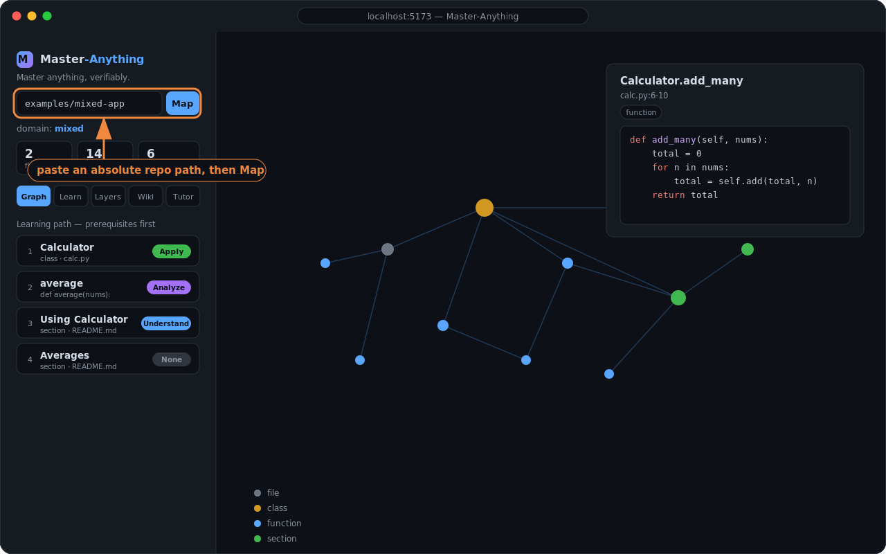
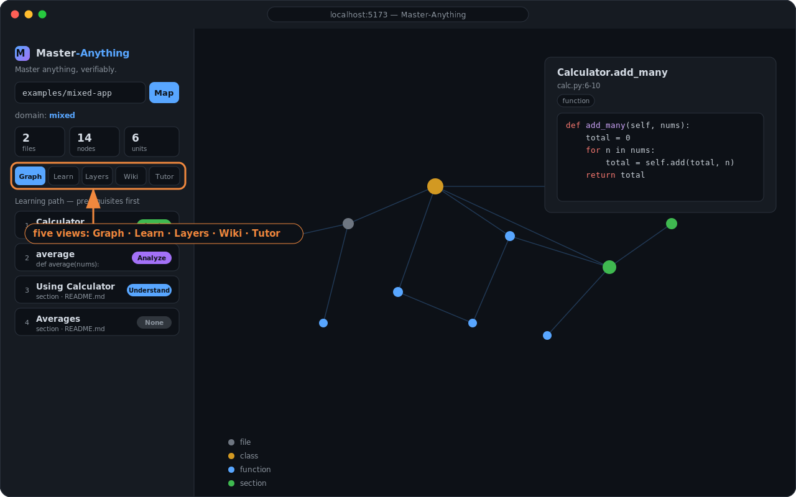
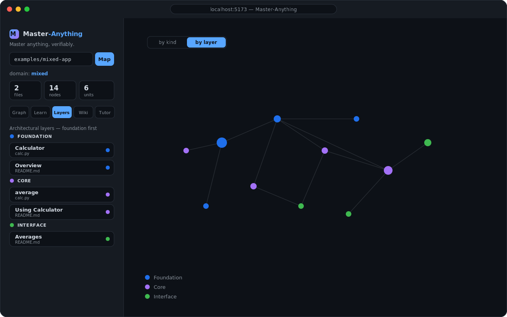
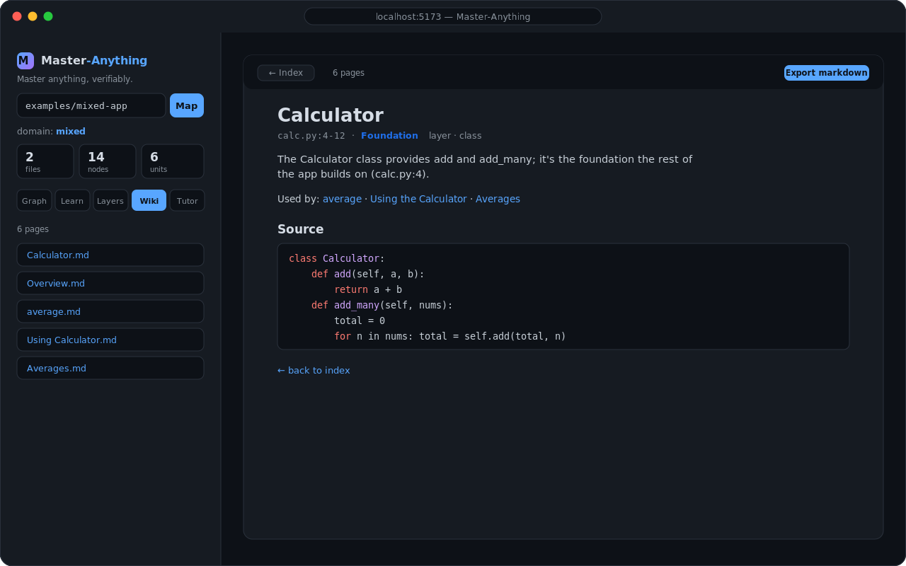
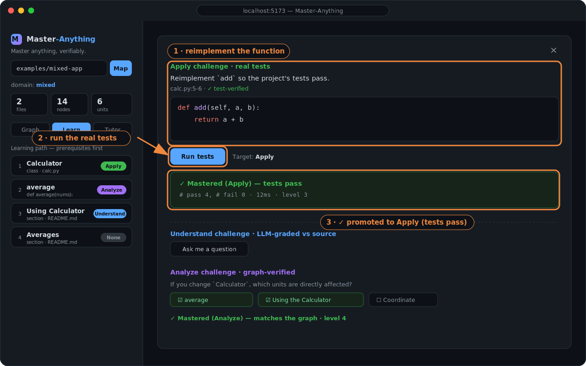

Tutorial
From zero to your first verified mastery
In ~5 minutes you'll run Master-Anything locally, connect a sample repo, and climb Bloom's ladder — Understand → Apply → Analyze → Create — with each rung checked by real tests and the graph, not an LLM's opinion. No API key required.
Prerequisites
- Node ≥ 22 and pnpm, plus
git. - For Python Apply/Create challenges:
python3+pytest(python3 -m pip install pytest). JavaScript/TypeScript use Node's built-in test runner — nothing to install.
Install & build
git clone https://github.com/everettjf/Master-Anything.git
cd Master-Anything
pnpm install
pnpm -r build # compiles all 5 TypeScript packagesA clean pnpm -r build is itself a health check — it typechecks the whole workspace.
Run the API + web app
In two terminals:
pnpm --filter @ma/server dev # API → http://localhost:8787
pnpm --filter @ma/web dev # web → http://localhost:5173The server prints its configuration on startup:
@ma/server listening on http://localhost:8787
LLM enrichment: off — heuristic summaries
Embeddings: off — lexical retrieval
Test sandbox: local pytest (subprocess)Connect a sample repo
Open http://localhost:5173 and paste an absolute path into the box. Use a bundled example to see everything at once:
<repo>/examples/mixed-app— code and docs (shows cross-domain links).<repo>/examples/py-calc— pure Python (fastest Apply/Create loop).

The five tabs

- Graph — explore the knowledge graph; click a node for its source. Toggle by kind / by layer coloring.
- Learn — the dependency-ordered path; click a unit to practice the Bloom ladder.
- Layers — units grouped by architectural depth (Foundation → Interface).
- Wiki — an auto-generated, cross-linked wiki; Export markdown to commit it into the repo.
- Tutor — ask in natural language; grounded answers cite
path:line, with multi-turn memory.


Climb the ladder (the core loop)
In Learn, click the Calculator unit. You'll get four challenges:
- Understand Answer a question in prose — an LLM grades it against the source (needs an LLM; see step 9).
- Apply The body of
addis blanked. Typereturn a + band hit Run tests — the project's real pytest suite turns you green and promotes you to Apply. - Analyze "If you change
Calculator, what's affected?" Select the dependents — graded against the call graph. - Create Add a new capability (e.g. a
mulmethod) and a test for it. The suite must stay green with strictly more tests → Create.

…and the same loop, live:

Every promotion above Understand is backed by an objective check — real test execution or graph ground-truth.
Retention: spaced repetition
Mastered units resurface on a decaying schedule. When something is due, a ↻ count badge appears on the Learn tab and a Due for review list lets you re-practice. Fail a review and the level drops one rung — mastery means retained mastery.
CLI (no server needed)
# knowledge-graph JSON for any directory
pnpm --filter @ma/core graph /abs/path/to/project --out artifacts/graph.json
# generate a cross-linked markdown wiki (writes <repo>/.master-anything/wiki/)
pnpm --filter @ma/core wiki /abs/path/to/projectOptional: add an LLM
Everything runs without a key (heuristics). The simplest way to enable the Tutor, Understand grading, and richer Create specs is to just export a provider key — it's auto-detected:
export ANTHROPIC_API_KEY=sk-ant-... # auto-detected → Anthropic, default model11 vendors ship as presets (OpenAI · Anthropic · Google · OpenRouter · Groq · DeepSeek · Mistral · xAI · Together · Fireworks · Ollama). Pick one, use provider/model shorthand, point at any OpenAI-compatible endpoint, or set a failover chain:
export MA_LLM_PROVIDER=groq GROQ_API_KEY=... # preset default model
export MA_LLM_MODEL=anthropic/claude-3-5-sonnet-latest # provider/model shorthand
export MA_LLM_BASE_URL=http://localhost:4000 MA_LLM_MODEL=my-model # custom endpoint
export MA_LLM_FALLBACK=openai,groq # try primary, then fall backCheck what's active any time: curl localhost:8787/config. See .env.example for embeddings, the Docker sandbox, and persistence.
Troubleshooting
- "not a directory" — the path must be absolute and on the machine running the server.
- Apply says "not test-covered" — that function has no test; it falls back to advisory (not counted). Try a covered unit like
Calculator. - Python challenges error — install pytest:
python3 -m pip install pytest. - Tutor/Understand unavailable — those need an LLM (step 9); without one the Tutor still returns the most relevant code locations.